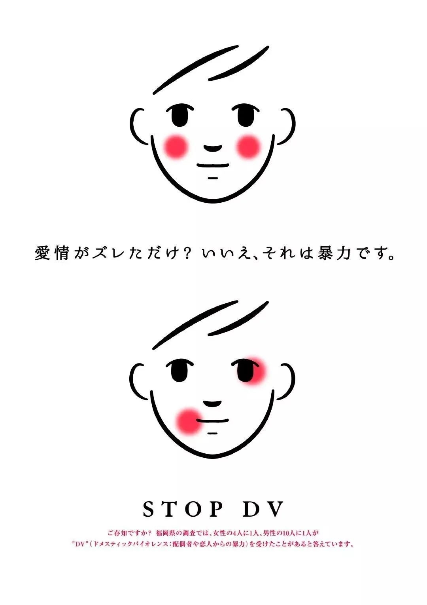

编辑 | 朝酒
翻译 | 汤达人，肥肥，Zephy，小安，小飞，TJ，司向予，Karen
数据支持 | 楼楼
特别感谢 | 北风儿，paper，hurrah
【美国 03.03】美国纽约2016年施行条例，单人用厕所禁止以男女划分。现在几乎所有的办公楼、饭店都设置有不论性别，所有人都可以使用的“无性别厕所”。美国特拉华州的研究生Chen haobo制作了跨性别者专用的内裤，可以隐藏遮盖性器官，希望能让跨性别者更便利的生活。世界上约有2500万跨性别者，Chen希望可以开发出可以大量生产，适合于跨性别者的内裤。美国东部康涅狄格州3名女运动选手向联邦法院提起诉讼，希望禁止跨性别者以女性的身份参加高校比赛。3人因为有跨性别者参加比赛，导致自己未能取得名次，获得奖学金。这违反了联邦法规定，侵犯了女性接受教育和参加体育的权利。其中一名运动员表示，“性别同一性的考虑和生物学上的公平是不同的问题，所有的女性应该拥有公平的竞技环境。”举办比赛的州学校协会表示，基于州的法律，每个学生都应该被以自己认同的性别对待，比赛允许跨性别者参加并没有什么不妥。一名跨性别运动选手表示，“我作为女性，只是和周围的人一样去参加比赛而已。但即使获得了胜利，也会受到批评，努力不会被认可，对此感到十分心痛。” ▲ 竞技运动中围绕跨性别者的争议一直不断，该怎么样实现平等和公平？【美国 03.04】在MSNBC的金牌节目Hardball主持了多年的Chris Matthews在周一的节目上突然宣布退休，他为自己过往的言论道歉并说道：“在政坛、媒体上，我们看到那些准备接管美国的年轻一代人正在为他们自己的事业奋斗着，他们在职场证明了自己，他们成长中所秉持的准绳比我那个时候更高——公平的准绳。很多准绳都和我们如何对话有关。对女性外表的称赞，对于包括我在内的一些男人来说，曾被不正确地认为是可以的，当然这永远都不合适，过去不好，现在肯定也不行。对于我过去对女性做出的此类评论，我深表歉意。”这场风波紧随GQ近日的一篇报道发生，记者Laura Bassett在其中讲述了自己过去在上Matthews节目时他说过的不恰当的挑逗话语。“2016年那时候，我正准备上台讨论对特朗普的性骚扰指控时，Matthews对着坐在化妆椅上的我说道：‘噢为啥我还没与你陷入爱河呢？’我当时紧张地笑了一下，然后什么话也没说。他随后又对化妆师道：‘继续化吧，我感觉我就要爱上她了。’还有一次，他的人堵在我和镜子中间，对着我当时为了上节目而穿的红裙恭维道：‘你这是今晚要去约会吗？’”Matthews在现场直播上的评论在过去几周里屡屡引起要求他下台的呼声。他还在Sanders拿下Nevada后将之比喻为纳粹在二战中拿下了法国。而在采访Elizabeth Warren的时候，说到有女员工指控Michael Bloomberg在明知自己怀孕的情况下教唆她堕胎时，Matthews不停质问Warren为什么她会觉得Michael Bloomberg撒谎了。“他有必要撒谎吗？（就这点小事值得）他撒谎来保护自己？”
▲ 问问看你周围的人，有多少人是觉得他“对女性外表的称赞”完全没问题而且也不值得道歉的呢？【美国 03.04】亚利桑那州的共和党致力于推行禁止跨性别女性参与学校女子运动团体的提案。该提案在被各州热烈讨论的同时，引发了LGBTQ群体的强烈抗议。“男性应该和男性一起竞争而女性应该和女性一起比赛，”亚利桑那州的一名共和党代表Nancy Barto如此说道，“世界上只存在两种性别，且无论有多少跨性别激素注入某人的体内，都无法让赛场变得公平。男性生来即是男性。你不可能改变自己的DNA。”Barto提出了“拯救妇女运动条例”并已经得到了共和党人们的支持。“近期研究恰恰证实了就算注射了雌性激素，男性仍然表现出显著优势。他们的骨骼更强健，肺活量也更大。”Barto说道。Nancy Barto认为此提案将为女子竞技带来公平公正。如果该提案通过，它将在所有学术院校生效。她补充该提案主要致力于保护女性体育竞技，并不包括性别认知为男性的跨性别者。该提案面临着各方各面非常激烈的反抗，反抗者也包括ACLU of Arizona，即亚利桑那州的美国公民自由联盟。“这是在试图孤立、侮辱跨性别者，将跨性别年轻人排除在体育竞技之外。”亚利桑那州的美国公民自由联盟政策咨询人Amanda Parris说道。“每一个孩子都有权选择自己是谁。没有一个孩子应该为此而受到区别对待。”该州民主党代表Daniel Hernandez表示。【韩国 03.05】韩国已逝女演员兼歌手雪莉（Sulli）曾在自己拥有百万粉丝的Instagram帐户上发布不穿胸罩的照片后引起了广泛传播从那以后，她成为韩国“无胸罩”运动的领袖。她向公众发出明确信号，穿或不穿胸罩是关乎“个人自由”的问题。尽管有许多支持的信息，但她也收到许多强烈反对的声音。许多社交媒体用户称她是“追求关注的人”，并指责她故意博出位。一些ins用户评论道：“我明白穿胸罩是个人选择，但她总是拍自己穿紧身衣让胸部轮廓凸显的照片。她不必这样做。”，“我们不责怪你不穿胸罩。我们要告诉你，你该隐藏自己的乳头。”，“你该感到羞耻。你能穿成这样去教堂吗？你可以穿成这样去见妹夫/姐夫或者岳父岳母吗？”，“不仅男性觉得不舒服，女性也是。”在韩国寻求自由的女性中这并非孤例，2018年反抗韩国社会对女性不切实际的审美要求的“脱下束身衣”（Escape the Corset）运动崛起。韩国女性被要求在化妆和护肤上花费很多时间。许多女性剪掉了长发，不再化妆。他们将这些作为反叛行为发布在社交媒体上。接受英国广播公司采访的许多女性表示，这两个运动间存在重大联系，它们在社交媒体上传播的方式表明了一种新的行动主义。近年来，韩国女性一直在抗议父权文化、性暴力，以及男性在洗手间和其它公共场所留下针孔摄像头等犯罪行为。2018年韩国爆发有史以来最大规模的女性抗议活动，成千上万女性走上首尔街头呼吁打击针孔色情片。这些接受采访的女性表示，她们现在面临两难选择：她们支持“无胸罩”运动，但她们没有足够的信心和勇气在公共场合这么做。一个重要原因是源于“凝视式强奸”的恐惧。在韩国的语境中，它指的是过度注视让人们觉得受到侵犯。这一运动并非只发生在韩国首都。它还激励了来自韩国大邱的22岁企业家和服装设计专业学生李那炫（Nahyeun Lee）。自今年5月以来，她一直在卖乳贴片，销售口号是：“如果你没穿胸罩，没关系！”▲ 纵观整个服装历史，胸罩一直都是同金莲鞋和紧身衣以及高跟鞋一样的男性凝视产物。即便支持它们的人们总是找百般借口说“胸罩有益胸部健康”、“不穿内衣的人是不检点的”，但科学证明长期穿内衣会增大乳腺癌的风险，“不检点”也是一个人为塑造非常主观的理由，没有证据说不穿内衣会得性或者其他方面的疾病。女性的身体不该由他人来塑造理由定义，女性属于她自己。【英国 03.06】东南铁路和大西部铁路最近签署了一项计划“庇护之路”，根据这项计划，来自英格兰南部、西中部地区和威尔士南部的家暴受害者可以申请免费火车票，以抵达安全的庇护处。这项计划是东南铁路一名车站经理Darren O'Brien的点子，他说这虽然只是一件很小的事，但却可以给处于绝境中的受害者带来很大的改变。家暴受害者可以与妇女援助组织（Women’s Aid）取得联系，或者也可以求助于家暴热线或本地的外展服务，如果有需要的话，受害者可以获得一处用以庇护的安身之所和前往庇护处的免费车票。妇女援助组织（Women’s Aid）的代理联合主席Adina Claire说道：“受害者离开伴侣的最大障碍是钱的问题，而这项计划能让他们在遭遇伤害时起码少担心一件事。”▲ 帮助家暴受害者不仅仅是号召他们离开家庭那么简单，而是需要我们整个社会组织起一个网络来为其提供保护。
【英国 03.07】英国上诉法庭近日开庭受理的上诉案，就围绕护照性别选项争议。权益人士克里斯蒂·艾伦-凯恩（Christie Elan-Cane）诉内政部护照科的现行政策不合法，涉嫌侵犯人权，2018年6月被英国高院裁定败诉，随后提交上诉法庭。
由此，护照性别选项问题又进入公众视野。它涉及到人权、平等、法律和现实生活中的各种问题。护照和各种表格上的性别栏增加一个选择，被权益组织提到尊重人权的高度。对于性别认同“非二元”群体，官方证件上设第三性别等于承认中立性别，意义深远。在现实日常中，这可以为他们免去许多令人不适、不快甚至感到隐私受侵犯的言语交流，在需要检查证件的各种场合不再遇到各种困阻。在他们看来，证件上这个“X” 意味着认可和尊重。目前已经有10个国家发放三种性别的护照：男性、女性、中性：澳大利亚、加拿大、丹麦、德国、马耳他、新西兰、巴基斯坦、印度、爱尔兰和尼泊尔。美国有几个州，包括加利福尼亚、新泽西和俄勒冈，在发驾照和出生证时也增加了第三性别：中立/中性。联合国下属国际民用航空组织（ICAO）已经更新了有关标准，规定机场的护照检查机器的设置中必须增加一个性别选项，X，意思是不详、不注明、未注明。争取法律和社会认可非二元性别认同的活动，在英国始于25年前。迄今为止，英国护照上的性别选择只有男性和女性。克里斯蒂·艾伦-凯恩（Christie Elan-Cane）认为这种现行政策是不合法的。根据欧洲人权公约，法律保护私人生活受尊重、不因性别和性取向受歧视的权利，非男既女的性别选项违反了这些法律条文。艾伦-凯恩诉内政部的讼案2018年6月在英国高等法院败诉。▲ 人生来的指派性别不能由个人决定，对于社会性别不同于指派性别的人，应该尊重ta们的个人选择。性别是一个长远的话题，任重而道远。【美国 03.09】艾丽西亚·罗迪斯（Alicia Rodis）的工作是监督美国一家主要电视网络电视连续剧的拍摄过程，拍摄过程非常复杂而且大胆。她在那里是为了确保导演遵守参加活动的30位演员各自设定的亲密界限。她在一个大的电子表格上记录他们同意的条件，以确保当摄像机转动时每个人都感到舒适。就在几年前，这些女性还不会从事这项工作。现在，她们是整个娱乐业发展最快的职业群体之一。作为训练有素的主持人，她们帮助表演者和制作人员处理涉及身体接触的敏感场景，从拥抱和亲吻到裸体或模拟性现场。就在几周前，强大的美国演员工会SAG - AFTRA发布了一份具有里程碑意义的文件，通过雇佣这些亲密关系专家来规范性爱场景。这是一项更广泛的运动的一部分，旨在阻止娱乐业的性行为不端。SAG - AFTRA主席Gabrielle Carteris说：“这是出于我们成员对自身安全的担忧。演员们，尤其是女性，大声说出自己的故事。不仅是关于温斯坦，还有其他很多人。” 67岁的前电影大亨哈维·韦恩斯坦（Harvey Weinstein）上个月在纽约的一场审判中被判犯有两项性侵罪。对他的指控引发了#Me Too and Time’s Up运动。从那以后的两年里，好莱坞对亲密关系协调员的需求激增。这个问题已经酝酿了很久，最近，艾米莉亚·克拉克（Emilia Clark）谈到在《权力的游戏》中拍摄一些让她觉得“可怕”的露骨场景。她在接受采访时说，“我现在和所有这些人一起拍摄全裸的电影，我不知道自己该做什么，我不知道别人对我的期望是什么，我不知道你想要什么，我也不知道自己想要什么。”“我们有特技协调人，编排打斗场面，当涉及到身体暴力时，我们真的会照顾人，”，艾丽西亚·罗迪斯（Alicia Rodis）说，她最初是作为一名打斗舞蹈指导接受培训的。“但是，当涉及到亲密和裸体，这是另一个高风险的情况，没有考虑到所有。这是令人震惊的。” ，电影行业的权力格局让演员们——尤其是女性——很难在不开心的时候说出来。“自我保护的首要原则是对你被问到的每件事都说‘是’。这真的是演员训练的一部分，”，佩斯说。▲ “吾亦是”运动从好莱坞沿袭至中国，当我们还在对抗男性“阴谋论”质疑的时候，好莱坞已经着手来准备确保内容双方的体感底线。平时质疑发声的女性的男性声称这是对有背景的男性的构陷的时候，有没有想过做出这种行动来担保自己的行为呢？【墨西哥 03.10】国际妇女节隔天，墨西哥成千上万的女性参与了3月9日“没有我们的一天”的罢工游行，以使全社会对日益严峻的性别暴力问题重视起来。在墨西哥城，女性很少出现在公交、购物区或餐厅咖啡店等地方。2019年，墨西哥平均每天有10名女性被杀害，而据警察调查，有超过700起案件属于“女性谋杀”（由女权主义作家Diana EH Russell于1976年率先定义，即femicide，是一种基于性别的仇恨犯罪，女性因为她们是女性而被故意杀害）。9号当日，很多学校因为游行而关闭，女学生们联合起来共同抵制学校的教学，一些必须要工作的女性则选择戴上紫色丝带或身穿紫色衣服来表示自己对行动的支持。而部分报纸上则设计有紫色的页面并将版面空间留下给女性作者。大约有80000人走上了街头，抗议开始时还比较和平，但随后在部分示威者和警察间发生了冲突。根据警察的说法，示威人群中有一些人投掷了汽油弹，于是警察发射催泪弹回击，最后有超过60人被拘捕。墨西哥的性别暴力问题正在变得越来越严峻，人们也对政府的不作为越来越不满。二月份的时候，总统López Obrador曾表示国内的性别问题是媒体“操纵”的结果。他的这个说法遭到了很多批评，他则随后表示他的政府会细心留意这个议题。【英国 03.11】为了纪念周日的国际妇女节，当天由全是女性包括四个姐妹组成的工作人员操作了从爱丁堡到伦敦的火车。为了鼓励更多的女性考虑进行铁路行业中的职业工作，LNER Flying Scotsman服务将在整个三月重新命名为Flying Scotswoman。这些女性担任的职位包括司机、培训经理和厨师。凯利·塔斯（Kelly Measures）已经当了11年的火车司机，她说，和她的三个姐妹一起上火车是一个“骄傲的时刻”，她们都来自彼得伯勒，也像她们的父亲一样在铁路行业工作。这位32岁的司机说:“我是一名司机，这个行业中大多数人是男性，但越来越多的女性选择来这里工作。”，“我们的爸爸在公司的工程部工作，而我碰巧在铁路上找到了一份兼职工作。”她的姐姐托尼·泰斯（Toni Measures）是船上的厨师，他们同父异母的妹妹杰米·提利尔（Jamie Tyrell）是一名忠诚的高管，艾莉·提利尔（Ellie Tyrell）是一名营销学徒。21岁的艾莉·提利尔说:“我们加入了需要各种不同技能的工作。”最初的flying Scotsman列车出自于将近100年前新成立的LNER列车上的第一列火车。这列火车于1924年命名，并于1928年开通了第一条从伦敦直飞爱丁堡的线路——这条线路也是这位苏格兰女飞人在整个三月里都要去的路线。LNER约42%的员工是女性，但该公司委托对890名女性进行的一项调查显示，85%的英国适龄工作女性没有考虑过从事铁路行业。LNER的人事主管Karen Lewis说，加入全女性服务是“了不起的事情”，但她补充说，该行业需要更加努力地吸引女性。她说:“我们想做的是庆祝女性在铁路行业中所能发挥的所有出色作用。”，“在LNER，我们试图让女性改变她们对铁路行业的看法。”为了纪念国际妇女节，英国将于本周五推出三列完全由女性员工运营的客运列车，“飞行的苏格兰女性”是其中之一。▲ 大多数的性别差异并不是女性不行，而是女性“不能”，如果女性团体本身就被认为是“不被需要的”，那么“女性本来比男性差这种话”就毫无说服力。【英国 03.12】Christie Elan-Cane曾提请英国内政部在护照的男、女选项外新增“X”的性别选项，并认为英国目前的护照设计违背了国际人权法。Elan-Cane最初的诉求去年被伦敦最高法庭否决后，本周二高级法官们又驳回了上诉。“我很遗憾地告诉大家，上诉法庭在今天上午已经做出了有利于英国政府的判决。”Elan-Cane在周二的推特上写道，并表示他们打算将此案继续上诉到最高法院。目前已经有部分的国家在护照本上提供第三性别选项，比如德国、澳大利亚和加拿大。在国际民航组织的标准下，“X”和“F”、“M”都已能作为性别选项被机器识别。“合法身份是基本人权，然而对于无性别人群来说，我们好像被当做没有这个权利了一样。”Elan-Cane说道，“我们实在很难接受，一个自我认同并非二元的男/女的人要为了取得一本护照而假装是一个不属于自己的性别。” 【英国 03.13】一群女外科医生正在发起一项新的行动，以防止人们把她们误认为非手术人员。为了纪念国际妇女节，她们制作了个性化的磨砂帽，以便让更多的女性当手术外科医生。位于什罗普郡奥斯维斯特里的罗伯特·琼斯和艾格尼丝·亨特骨科医院（RJAH）表示，英国大约12%的外科医生是女性。 吉莉安·克里布（Gillian Cribb）提出了制作“女权手术帽”这个想法，她说，“许多人认为如果你不是男性，你就不会是一名手术操刀的外科医生”。她说：“这种情况正在减少，但有时病人会感到惊讶。”，“我会和诊所里的病人谈论手术，他们会问是谁在做手术，因为他们认为你是女性，所以你不会是那个拿着手术刀的外科医生。”该医院信托机构表示，在创伤和整形外科分科中，女性外科医生的数量下降到不到6%。“顶级女医生的收入低于男性。”她说，她的新学员中有25%是女性。“很高兴看到它在改变，”她说。“当我接受训练时，几乎没有女性外科医生可以成为我的学习榜样——那时的女外科医生实在太少，所以我很高兴我可以成为当地女性注册医生的榜样。”英国皇家外科学院说：“女性在外科手术中的比例一直很低，但随着越来越多的女性在这一行业取得成功，这种情况正在逐渐改善。” ，“我们的女性外科手术网络致力于进一步改善这一状况。”▲ 突破性别瓶颈不仅需要能力更需要勇气，而女性的勇气就来自于各个行业各个领域对女性的尊重、包容和理解。【美国 03.19】帮好莱坞拍摄更安全性爱场景的女性 Alicia Rodis是国际亲密总监国际组织的全职亲密协调员和联合创始人。她的使命是：监督美国一个电视剧的性爱场景的拍摄过程，确保导演遵守30位演员各自设定的身体界限，帮助她们构建一些敏感的场景，从拥抱、亲吻到模拟性爱。我们把这种设定演员间身体界限的人叫做亲密协调员。Alicia Rodis说：“我们有特技协调员，编舞现场，在涉及人身暴力时确实照顾到演员们，但是当涉及到身体接触和裸露度时，则完全没有考虑。”
就在几周前，美国演员协会SAG-AFTRA发布了具有里程碑意义的文件，通过雇这些专家来规范性爱场景，这是制止娱乐圈性不端行为的更具有驱动力的一部分。SAG-AFTRA主席Gabrielle Carteris说：“这是出于我们对演员安全的关注。”，“演员，尤其是女性，大声说出自己的故事。”自2017年电影制片人Harvey Weinstein性侵女演员事件发酵以来，他终于在上个月被判定犯有两个性侵罪。针对他的指控引发了#MeToo和Time's Up运动（反对性骚扰的运动），此后的两年中，好莱坞对亲密关系协调员的需求急剧增加。妇女几年前就不会从事这项工作，但现在，它已成为娱乐行业中发展最快的行业之一。 ▲ 娱乐行业的女性确实很可能会被性骚扰，这一职业就很巧妙的规避了这类问题，减少了很多对女性演员的伤害。此职业理应在全球娱乐行业推广。【德国 03.20】2019年联邦反歧视报告的调研结果显示，德国有超过9%的人在最近三年内曾经在工作场所受到性骚扰，实施骚扰者中80%为男性，受害者中有67%为女性。工作场所性骚扰的定义包括：带有性暗示的笑话、辱骂，以及过多不必要的接触。80%的受害者遭到了重复性的骚扰。仅有不到2/3的受害者选择当时对骚扰者提出警告。最容易受到性骚扰的职业是面向客户的职业，包括健康和社会服务、贸易、加工业、教育和培训。对于性骚扰的反应因受害者的性别而略有不同。感觉被羞辱和严重自责的女性占48%，男性中占28%；感觉强烈心理压力的女性占41%，男性中占27%；感觉受到严重威胁的女性占30%，男性占21%。2015年的反歧视报告中有12%的人在三年内曾受性骚扰，受害者性别比例与今年类似。【印度 03.24】绞刑终结了轮奸案，但这远非真正的正义。那个给印度留下近8年污点的故事以罪犯被绞死结束，这是个可怕的结局。印度媒体称被害者乔蒂·辛格为Nirbhaya，意为“无所畏惧”。2012年，四名对乔蒂·辛格实施轮奸及谋杀的男子于周五（3月20日）被绞死，这标志着一段漫长且痛苦的故事的结束。然而这段故事揭露了印度在对女性实施性暴力方面骇人听闻的记录。Nirbhaya的父母公开庆祝“正义”终于得到了伸张，然而在行刑的德里监狱外，一大群人举着“强奸犯去死”的牌子，要求严惩凶手，在听到犯人被判处绞刑的那一刻他们欢呼雀跃。这一切看起来并没有那么令人舒服。因为几乎没有证据表明，死刑就是对性暴力的一种威慑，而且自辛格被谋杀之后，印度就对强奸案实施死刑，但强奸案件发生率依然持续攀升。“绞死强奸犯”是政客们展示给大众的一种应对性暴力事件的简单方式，但这种方式同时忽略了印度本土的潜在问题——到底是什么导致印度成为一个每20分钟就有一名女性遭到强奸的国度，一个对女性来说世界上最为危险的国家。虽然这个案子震惊了全世界，并且迫使政府采取了所谓的行动，但事实上，什么都没有改变。妇女的地位低下依然是系统性的，生活在印度农村以及城市的妇女们，就仅仅是为了保证自己能安全地到达下一个目的地，也不得不花费大量的时间来提前谋划自己的出行。女性报告性暴力的机制依然严重匮乏，法庭上依然有堆积的10多万起强奸案悬而未决，邦政府甚至不愿意为路灯等基本安全设备投资。事实上，在公交车轮奸谋杀案发生以后，政府曾设立了10亿卢比（1.12亿法郎）的基金，用于资助各邦对妇女安全项目的投资，但是，至今仍然有91%的基金未启用，这个事实表明，即使资金充足，（政府）依然没有动力去解决这些问题。尽管报纸上每天都充斥着各个年龄段的女性遭到强奸和谋杀的可怕事件，但去年11月发生在27岁的海德拉巴女兽医身上的轮奸案，再次成为全球媒体关注的焦点，一切都表明情况根本没有任何改变。死刑的威胁并没有能阻止着四名男子破坏女孩的摩托车，摩托车倒地，她接近他们请求帮助，然后男子轮奸她，让她窒息，最后烧掉她的尸体。这起事件之后，马上绞死这些人的声音再次激荡起来。当警方称由于罪犯试图逃跑所以当场击毙了他们之后，全国上下也是一片欢腾。除非整个社会和政府都接受暴力只会导致暴力的观念，而且处决几名罪犯并不能治愈全国范围内普遍存在的性暴力问题，否则印度妇女将永远无法获得安全以及真正的正义。▲ 让作恶之人一死了之只是表面工作，远非将问题根本解决的方法，改变产生恶的思想根源才是，而这项工作并不容易，需要无数个觉醒，无数个达成共识。【南非 03.25】随着冠状病毒在南非传播逐渐扩大，对女性和男性的不同影响也越来越明显。虽然感染者中男性居多，但女性则还要面临其他的社会问题。据联合国妇女事务执行主任普姆齐勒·姆兰博·恩库卡（Phumzile Mlambo Ngcuka）说：“现在各国政府要认识到妇女所作的巨大贡献。” 前南非副总统姆兰博·恩库卡（Mlambo Ngcuka）在声明中敬告各国政府“关注女性比例过高但低薪酬的行业，如日结工作，从事清洁、护理的工作，收银员和餐饮部门以及非正规工作。”同时在21天的禁闭期内，家庭暴力上升的也是妇女权利组织最为关注的问题。埃博拉和兹卡病毒爆发的证据表明，在封锁期间，家庭暴力事件都有所增加。流感带来的精神压力和经济压力等问题可能会引发家庭暴力。女权组织警告说：“犯罪者可能利用‘封锁时期’的有利条件来控制伴侣，这阻碍了女性获得安全和法律支持。”在南非，有三分之一的女性遭受家庭暴力，而杀害女性（被其亲密伴侣杀害女性）的比率是全球平均水平的五倍，在这种“封锁时期”下会发生什么事情是社会需要担忧的。在这种时期下女权行动者在“全面关闭”的政策下取得的成果有限，需要长期的坚持和努力。同时还要求政府在未来的工作中都要有一个尖锐的性别视角去看待社会问题。【韩国 03.26】N号房间的性丑闻震惊了韩国，此事件涉及至少74名妇女，其中还包括16名未成年女孩。她们被欺骗并被勒索在Telegram上分享自己的性爱视频。罪犯是24岁的孤儿院志愿者赵主斌，在平台上他是更为著名的“博士”。此事在公众之中引起轩然大波，数百万人共同签署请愿书，要求将运营者公之于众，赵的身份才最终浮出水面。他被指控在不同的聊天室之间共享色情内容，并以加密货币接收付款，在此过程中积累了26万名用户。根据Quartz的说法，客户必须要支付1200美元才能访问Telegram的N号房间，而在那里，载有未成年女孩受勒索拍下的色情内容。为了访问这些房间，用户必须首先要上传自己手中的性虐待视频和图像，以“证明”自己。这些聊天室的运营者围猎那些活跃在聊天应用程序或Twitter上的失控青少年，他们往往从事卖淫或以发送色情信息赚钱。然后，运营者通过这些帐户与女孩联系，并承诺提供快速且高薪的模特或陪同演出。接下来，这些女孩被引导到Telegram帐户中，虐待者在此慢慢获取了她们的详细信息，包括她们的姓名，电话号码，地址和裸照，而这些裸照正是后来被用来勒索她们拍摄性内容的工具。韩国的性丑闻往往与K-pop行业关系密切，之前Burning Sun的性丑曾闻备受关注。BigBang的前成员胜利因组织卖淫罪而被起诉。K-pop臭名昭著的有毒男性气质的问题还与25岁的女歌手崔雪莉和28岁的具荷拉的死亡有关，具荷拉的前男友被指控在女方不知情的情况下拍摄他们的亲密时刻以及殴打虐待女方。Telegram的N号房间性丑闻提醒我们政府官员，结束对于日益增长的性犯罪的担忧，依然是一项严峻的挑战。两性平等大臣李正玉曾发誓要修改包括在线美容以及未成年人勒索在内的，有关性犯罪的法律。 （据悉，N号房间事件得以曝光要归功于卧底在这些房间两位女大学生；昨天已经有111名女律师宣布愿为此事件受害者提供法律援助，这个时刻，女性之间的互助才是最让人有安全感的东西。） 【美国 03.27】最近至少有1.96亿美国人收到了同样的紧急通知：随着冠状病毒的蔓延，家是最安全的地方。但对于一些人来说，家并不那么安全。在美国，每年都有超过1000万的人遭受家庭暴力。专家担心在流感期间所采取的强制隔离措施可能会使这个数字变得更高。“逃离受虐待的家庭对幸存者很大的挑战。但现在，因为强制隔离的措施可能会增加施暴者的控制权力。并且紧急电话也会变得困难，因为人们基本每时每刻都被迫隔离在一起。在这种情况下，施暴者会监视你的一举一动。”美国最大的家庭暴力幸存者服务首席执行官Alejandra Y.Castillo对美国之音说。
全国家庭暴力热线称，施暴者用强制隔离当天然屏障去伤害家庭成员。全国反家庭暴力联盟首席执行官Ruth Glenn在接受美国之音采访时说：“随着人们对冠状病毒的担忧持续增长，社区告诉人们要呆在家里，但这却让施暴者有了手段来虐待家人。” 更重要的是，这场流感危机导致正在受帮助的幸存者资源变紧张。例如，幸存者机构通常是集体居住环境，但现在他们不得不自我隔离，因为如果有人生病就会引发更大的问题。同时在流感下出现的经济经济萧条，一些私人捐款也慢慢变少。正在遭受家庭暴力的人们仍然可以拨打全国家庭暴力热线，全国各地的受害者机构仍然开放。但专家警告说，这次流感将给家庭暴力幸存者带来一场不容忽视的危机。 【美国 03.30】女子篮球联盟WNBA与女球员们签署了合同，同意在几年内大幅提高女球员们的薪酬，最高可达到一年50万美元。在此之前，即使是最优秀的球员也只有约10万美元年薪，一名职业联赛的普通球员收入在4-6万。超过半数职业女球员需要在WNBA赛季间歇兼职打国外联赛,造成球员过度疲劳，增加受伤几率。相比之下，NBA联赛男球员的最低年薪已经超过了83万美元。另外NBA有46名男球员年薪在2千万美元以上。WNBA对如此巨大的性别薪酬差异的解释是：男球员的联赛能吸引更多观众和转播，因此整体有更高收入。针对这种说法，福布斯对WNBA财务状况做了全面分析，得出的结果却是：WNBA将主要收入放入了自己的口袋。NBA联赛对男球员的工资支出占50%的联赛收入，而WNBA对女球员的工资支出仅占22.8%的联赛收入。福布斯的报告举例说明：顶尖女球员Fowles为她的俱乐部贡献了一年122万美元的销售收入，而她仅得到了10万美元薪水。【美国 03.31】民主党总统候选人拜登被指控曾于1993年性侵犯下属，主流媒体却选择对此事集体噤声。相反，主流媒体近期对拜登的报道全是主张平权的正面形象，例如“拜登最可能选择的10位女副总统”，或“拜登内阁：打破男孩俱乐部”。对特朗普的性侵指责不闻不问的共和党人正对此事大做文章；而民主党人又不肯正视此事。双方的态度都很令人失望。同时受害人的证词被指责无法被证实，前后不一致。这是性侵指控常常遇到的难题，而社会往往倾向于相信男性永远不会撒谎。这就是为什么要告倒韦恩斯坦这样有权有势的男性，通常需要十几位女性几十年的努力。这一次受害人曾向Time's Up法律援助组织请求帮助。这家机构也曾帮助韦恩斯坦的受害人。但她被多次告知，他们不能协助指控总统候选人，因为这会损害到他们的非盈利机构身份。同时这家组织还提到，他们的公共关系公司也正在为拜登准备大选。这不是拜登第一次被指行为不端。在过去的几个月里共有8名女性提到拜登多次故意肢体接触和侵犯私人领域。拜登只简短回应“我从没做过任何需要道歉的事情。” 【马来西亚 03.31】马来西亚政府在新冠疫情封城禁足期间专门针对女性给出了隔离生活建议：应为居家的丈夫梳妆打扮；不要挑剔和激怒丈夫。马来西亚的新冠封城政策是从3月18日开始的。政府女性事务部在超话“女性防疫”下给出了多条避免封城期间家庭冲突的建议。在一张宣传海报上，一个坐在沙发上的男性要求女性，当丈夫不会做家务时不要表现出讽刺。另外一张宣传海报则建议女性尽量避免指责丈夫。为了更平易近人，海报还使用了哆啦A梦的卡通形象。另外女性事务部还建议女性即使在家也要注意着装和化妆。这些海报引发了社交网站上的大量讥讽：“没有更多建议告诉我们该怎样避免家暴吗？”据统计，各国封城期间家暴案例数普遍有所上升。马来西亚在世界经济论坛的性别差异指数报告中排名第104，仅高出中国2名。▲ 关注男性受伤的自尊心，竟然比关注被家暴的女性更重要。